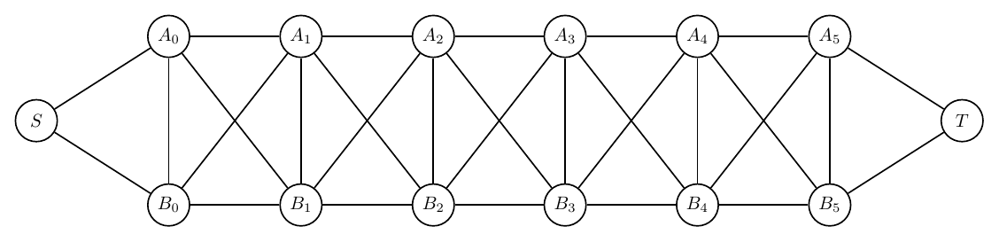

This report records each challenging prompt, validation history, and every rendered iteration image.
| Case | Success | Iterations | Visual Score | Nodes | Edges | Min Node Dist | Min Edge Clearance | Errors Seen |
|---|---|---|---|---|---|---|---|---|
| Braided Ladder With Portals | True | 1 | 9.00 | 14 | 30 | 2.53 | 1.99 | 0 |
Prompt: Draw an artificial undirected graph called a braided ladder with portals. There are two horizontal rails A0-A1-A2-A3-A4-A5 and B0-B1-B2-B3-B4-B5. Add vertical rungs Ai-Bi for i=0..5. Add diagonal braid edges A0-B1, B1-A2, A2-B3, B3-A4, A4-B5, and also B0-A1, A1-B2, B2-A3, A3-B4, B4-A5. Add portal nodes S and T, with S connected to A0 and B0, and T connected to A5 and B5. Make it readable and symmetric.
Success: True
Structure: 14 nodes, 30 edges.
Warnings:
graph_ok: True; layout_ok: True; code_ok: True; render_ok: True; visual_ok: True; visual_score: 9.00; next_refinement: None; min_node_dist: `2.53`; min_edge_clearance: `1.99`
